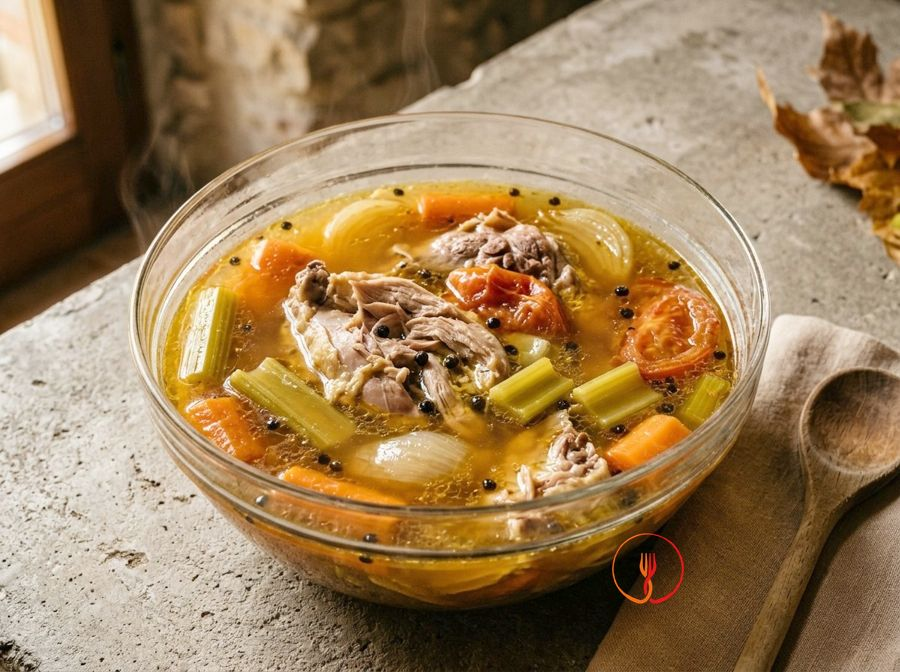

Hen and/or Capon Broth
Ingredients
- hen about 1.2 kg1 unit
- capon about 1.5 kg1 unit
- cold water3 l
- carrots2 units
- celery stalks2 units
- onion1 unit
- ripe tomato (optional)1 unit
- peppercorns4 units
- Saltto taste
- Parmigiano or Grana rind100 g
Allergens
Milk, Celery
May contain traces of: Eggs.
Method
- Thoroughly clean the hen or capon, remove any feather residue and check that the internal cavity is clean.
- Place the meat in a large pot and cover with cold water. Starting from cold allows the aromas and juices to distribute into the broth.
- Add carrots, celery, onion cut in half, tomato, peppercorns, and parmesan rind.
- Slowly bring to a boil and remove the foam that forms on the surface with a slotted spoon, so as to obtain a clearer broth.
- Lower the heat and let it simmer gently for about 2–3 hours, checking that the meat reaches a safe cooking point even near the bones.
- Salt moderately during cooking, taste and adjust the flavor only at the end, preventing the broth from becoming excessively salty.
- Extract the meat and vegetables, then filter the broth with a fine-mesh strainer. If you want a leaner result, cool it quickly and remove the solidified fat on the surface.
- Use the broth for tortellini, cappelletti, risottos, or soups. Quickly cool what you do not use and store it in the refrigerator or freeze it in portions.
Chef's tips
Tips, mistakes and alternatives;
- Do not boil violently: the broth becomes cloudy.
- For a more delicate flavor use hen; for a richer taste choose capon.
- You can add a piece of beef bone for a more intense flavor.
- For a more concentrated broth, extend the cooking time and slightly reduce the liquid.
- Do not leave the broth at room temperature for many hours: cool it quickly and refrigerate it.
Nutrition facts (estimate)
| Per serving (700 g) | Per 100 g | |
|---|---|---|
| Energy | 1230 kJ / 294 kcal | 176 kJ / 42 kcal |
| Protein | 24 g | 3.5 g |
| Carbohydrates | 4.2 g | 0.6 g |
| of which sugars | 3.5 g | 0.5 g |
| Fat | 20 g | 2.9 g |
| of which saturates | 8.4 g | 1.2 g |
| Fibre | 0.7 g | 0.1 g |
| Salt | 2.8 g | 0.4 g |
AI estimates based on average CREA / USDA data: indicative only, not a substitute for medical or dietitian advice.
Open the recipe in the app for the shopping list, ingredient sheets and nearby shops.